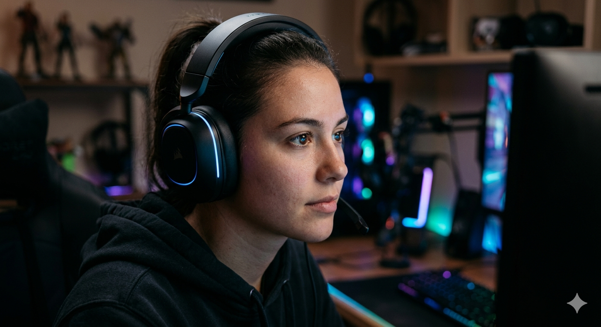
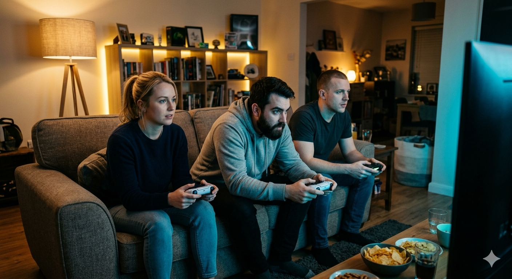
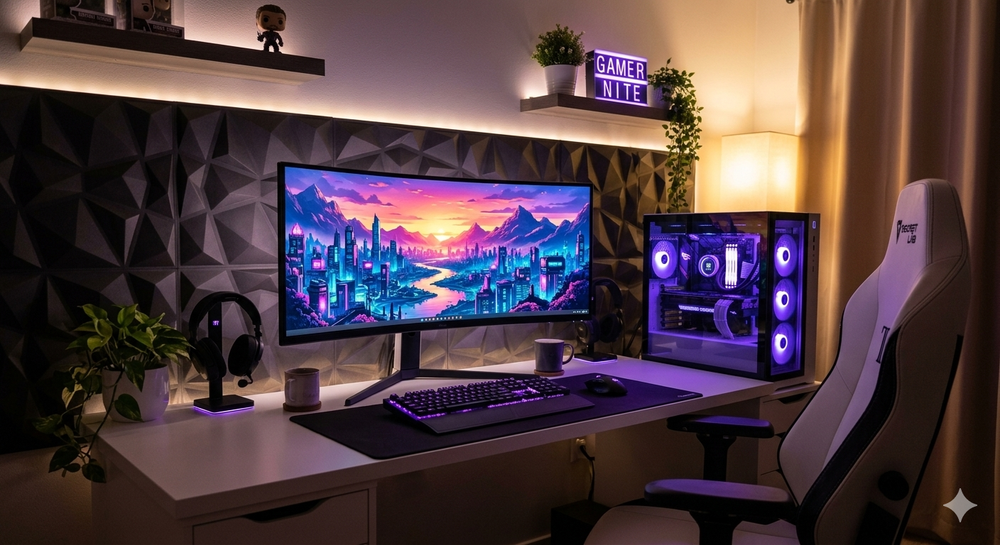
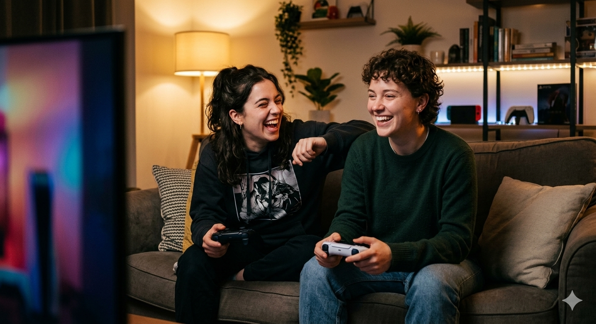

What is Gaming?
Gaming is when you play a videogame on a platform(xbox, playstation, nintendo)
It requires a vast array of different skills, some games are more technical, some are more reflexes, some are more intellectual
There are many different types of games on different platforms, it would be impossible to list them all but some popular ones include FPS, RPG, Open World, Table Top, and more.

Who Games?
Gamers come from all backgrounds. There are no barriers to gaming due to its versitility
Some game for fun, some with friends, some by themselves, some competitively.
The gaming community is vast and varied and there is a spot for anyone
I have been gaming since I was a kid and it is one of my favorite ways to connect with family/friends
Best Times to Game
There is no best time to game. gaming can be done at anypoint
Because of this it is a hobby that is almost always done
This lack of restriction make it more accesible and popular

Best Locations
The best part about gaming is that it can be done anywhere with a gaming setup
You can game in public spaces or from the comfort of your own home
portable gaming devices, like switches and phones, and pcs can be taken anywhere so there is no ideal place to game

How to Start Gaming
Start by asking what type of game you would enjoy, there is plenty out there for everyone
Aquire the correct console needed to play and download/buy the game
Play at your own pace and figure out what works for you
Why People Love Gaming
Gaming can provide comfort, or happiness and improves mental well being
It provides mental challenges through problem solving and learning.
It can help people develop friendships through the interconnected community.

AI Prompts
Images
what is the proper syntax for a showSection function in JS if I am trying to have 1 section always active by default
What does the error around the arrow function mean, is there a fix?
Do I remove the section.active statement and still keep the logic